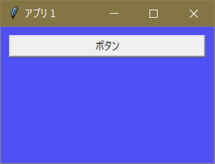
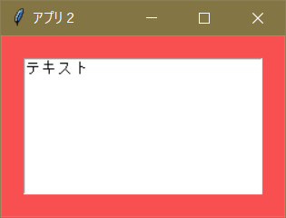

実行例
import tkinter as t
#アプリ１の定義
app1 = t.Tk()
app1.title( 'アプリ１' )
app1.geometry( '250x160' )
app1[ 'background' ] = '#5050f8' #背景色を青に設定
#アプリ２の定義
app2 = t.Tk()
app2.title( 'アプリ２' )
app2.geometry( '250x160' )
app2[ 'background' ] = '#f85050' #背景色を赤に設定
#アプリ１にボタンを作成
but = t.Button( app1, text = u'ボタン' )
but.place( x = 10, y = 10, width = 230 )
#アプリ２にテキストを作成
tex = t.Text( app2 )
tex.place( x = 20, y = 20, width = 210, height = 120 )
tex.insert( 0., 'テキスト' )
app1.mainloop()
app2.mainloop()
実行結果
 